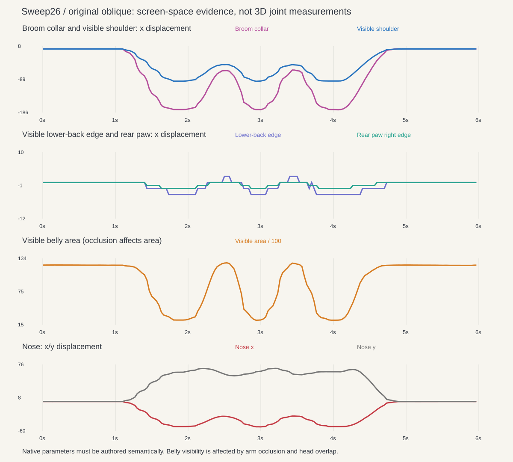
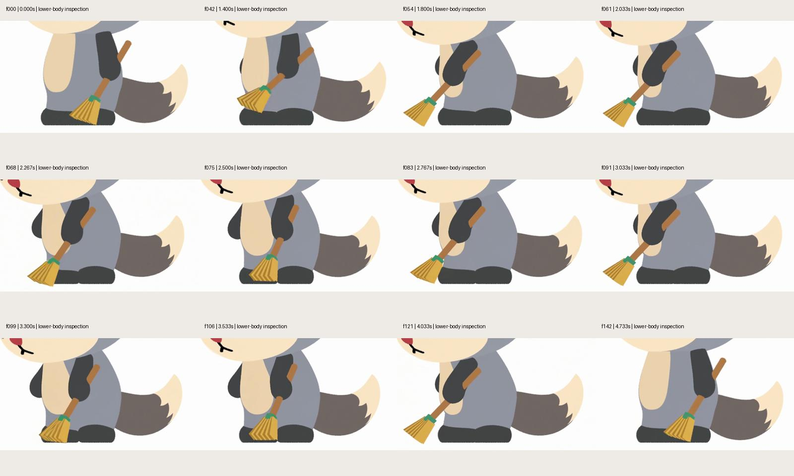

A stable base.
A turning upper body.
The liked oblique original uses coordinated tool, arm, chest and head motion over almost stationary visible feet. The next rig needs separate support, pelvis and chest responsibilities so the body can accommodate the sweep naturally.
Analysis + design · no new native motion in this passPoints mark visible image features, not a recovered skeleton. Hidden hips/knees, 3D rotation angles and left/right load remain unknown. The videos show matched time, not calibrated matching cameras.
The useful distinction is stable contact with an articulated body above it. The original does not establish large steps. Sweep25 currently rotates its body and thighs with one common frame, so it has no independent chest-to-pelvis twist.
All180 frames at960×960. Screen measurements include visibility and projection effects; they are not native rig targets. Rear-foot range stays2px across three segmentation thresholds.
What changes through a stroke
Preparation moves the tool, arm and head together. At work the chest presentation narrows; during recovery it opens again while the lower support stays quiet. The visible belly area also changes with arm occlusion, so area alone is not a twist measurement.
Inspect Recovery at2.50s: more of the far arm, belly and image-left eye becomes visible. Relative to Work at2.03s, the visible far-arm area grows from543 to2,385px². The native pilot needs to test this unwind and the associated head attention, with the feet still supported.

Separate responsibilities in the rig
Current Sweep25
- One work/stroke pair
- One rigid body + thigh transform
- Same frame carries shoulders, neck and tail
- Displayed paws excluded and fixed
Verified implementation of a restricted motion model. Chest and pelvis cannot articulate independently.
Expanded design · not yet built
- Contact frames and balance intention
- Pelvis with bilateral hip/thigh accommodation
- Independent chest orientation through a broad torso field
- Chest-bound shoulders and neck; pelvis-bound tail
- Original arm articulation → world grip → broom contact
First pilot keeps both paws supported. No step, large foot roll or measured load ratio is invented.
Read the controls, integration boundaries and A/B pilot specification · Design contract JSON
Inspect the source poses
Enlarged feet, lower body and tool

All180 source frames with visible-part contours


Method, confidence and exact evidence
This uses local color-component and silhouette measurements followed by visual review. Human Pose Landmarker is documented for human bodies; this mascot analysis does not claim a trained human skeleton or a recovered3D pose. Official model scope.
Contact stability and upper action are observed. Pelvis/chest rotation split and support response are design inferences. True force, center of mass and hidden joints remain unresolved. Initial centroid measurements contaminated by occlusion were rejected.
Complete analysis · 180-frame measurements · Threshold sensitivity · File hashes · Original source video · Unchanged native video